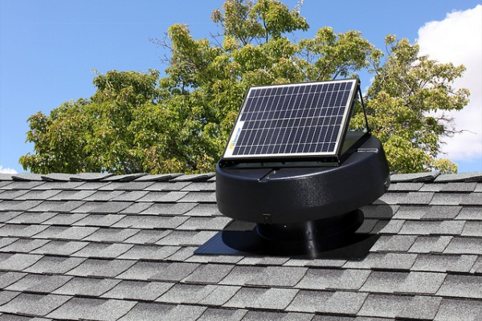
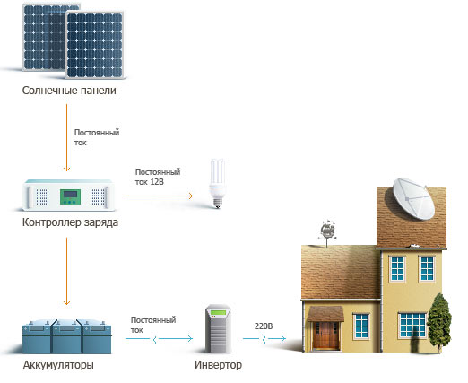
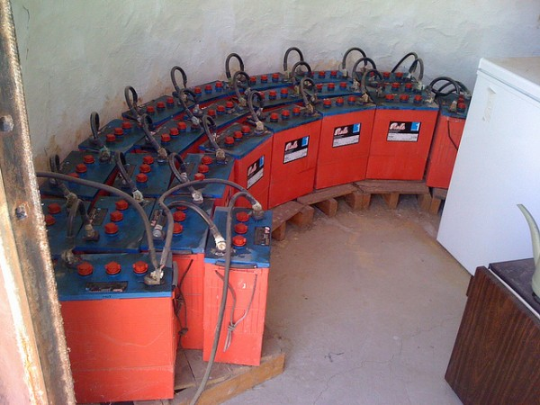
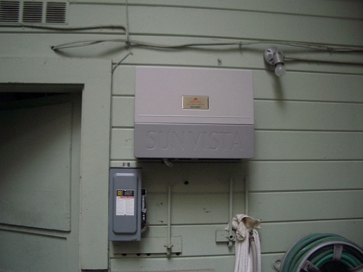
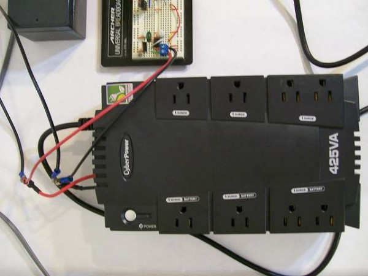
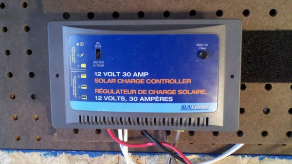
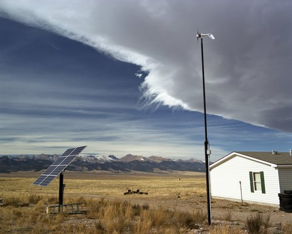

Еще об оборудовании для солнечных батарей

Для того чтобы решить какое оборудование для солнечных батарей нужно выбрать, вначале нужно изучить из чего состоят, как работают и какие виды солнечных модулей бывают.
Солнечные батареи – это преобразователи солнечной энергии. Солнце является альтернативным источником для выработки электричества. Для этих целей широко используют солнечные батареи. Благодаря физическому процессу фотоэлектронной эмиссии на поверхности фотоэлементов, из которых состоится солнечная батарея, при воздействии световой энергия лучей солнца получается новый вид энергии — электрическая.
Если выразиться по-другому, используется процесс преобразования световой энергии в электрическую, который называется не иначе, как фотоэлектрическим эффектом. Надо отметить, что для ныне выпускающихся солнечных батарей прямые солнечные лучи не нужны. Для них вполне достаточен дневной свет. Облачная погода, пасмурный день или осадки – им не помеха.
Солнечные фотоэлектрические модули — состоят из нескольких солнечных фотоэлементов, которые функционируют по законам фотоэффекта и вырабатывают электроэнергию из солнечных лучей. Основными материалами для производства фотоэлементов и модулей служат полупроводники на основе кремния. Исходя из того, как атомы кремния размещены в кристалле, различают фотоэлементы разных структур: монокристаллические, поликристаллические и аморфные.
Модули, образованные из фотоэлементов на основе моно- и поликристаллической структуры кремния, имеют сравнительно большой КПД. Множество таких модулей, в свою очередь, образуют солнечную батарею.

- Солнечный вентилятор для уменьшения температуры на чердачке
Солнечные батареи или фотоэлектрические комплекты, как выше отметили, типично состоят из кремниевых модулей и являются наиболее распространенными производителями электроэнергии. Эти источники энергии бесшумны и экологически безвредны. Они стабильны и долговечны. Весьма удобно их использовать для электроснабжения отдельных домов и коттеджей, сельских школ и амбулаторий, офисов и гостиниц, разных отдаленных постов и контрольных пунктов, рекламных щитов и электрических панорам.
Комплекты солнечных батарей, соединенные между собой разными комбинациями, образуют солнечные фотоэлектрические системы. Эти системы могут работать в двух основных режимах:
- Автономные фотоэлектрические станции. Они предназначены для энергосбережения отдельного жилого дома, коттеджа или офиса.
- Резервная энергосберегающая система. Эта система в случае аварии на сети передает всю или часть энергию в сеть для обеспечения бесперебойного питания важных объектов.

- Схема подключения оборудования для солнечных батарей
- При таких циклических режимах используются накопители солнечной энергии – аккумуляторы. Для солнечных батарей аккумулятор нужен как воздух.

Аккумуляторные батареи для хранения "солнечной энергии"
Дневная зарядка аккумулятора от солнечной батареи позволяет по вечерам или ночью использовать их емкость для электропитания таких важных объектов, как компьютеры, средства связи, освещение, факс и другие. Для этих целей повсеместно используют инверторы и блоки бесперебойного питания.
- Инверторыпредставляют собой электронное устройство,
которое преобразует низкое постоянное напряжение заряженных
аккумуляторов в высокое переменное напряжение промышленной частоты.
Переменное напряжение необходимо для питания стандартной аппаратуры,
питающейся от стандартной сети 220 В, 50-60 Гц.

Настенный инвертор в работе
Инвертор состоит из двух основных частей. Широтно-импульсный генератор высокой частоты и преобразователь напряжения (обычно – это повышающий трансформатор). Резервная энергосберегающая система по своей сути является ББП более крупного масштаба.
- Блоки бесперебойного питания(ББП) используются для оборудования и устройств, для которых нежелательно неожиданное исчезновение питающего напряжения.

Блок бесперебойного питания
Те, которые пользуются компьютерами, хорошо знают, как важны ББП для эксплуатации их устройств. Эти блоки, при потерях питания от сети подают звуковой сигнал и поддерживают напряжение питания на определенное время для принятия соответствующих мер со стороны пользователя.
- Контроллер заряда солнечной батареи– это
устройство, которое немного напоминает по своему назначению
реле-регуляторов старых отечественных автомобилей. Контроллер
соединяется на отрезке электрической цепи идущей от солнечной батареи к
аккумуляторам и потребителям.

Небольшой контроллер заряда солнечной батареи
Пока аккумуляторная батарея не заряжена полностью, контроллер не соединяет потребителей. Когда аккумуляторная батарея заряжена и зарядный ток равен нулю, тогда потребители могут быть подключены. Кроме того, при аварийном разряде аккумулятора, контроллер снимает нагрузку. На практике контроллер работает совместно с датчиком освещения, который включает освещение только при наступлении сумерек.
Установка солнечных батарей

- Солнечные модули установленные под углом 45-50 градусов
Солнечные батареи устанавливаются в основном на крышах или балконах на южной стороне. Они монтируются под углом 45 – 50 градусов к плоскости горизонта. Под ними необходимо оставить свободное пространство для циркуляции воздуха и естественного охлаждения батарей.
Производством солнечных батарей на западе занимаются самые известные компании как British Petroleum, Sunware, Siemens и другие. В России в основном этим занимаются частные компании и бывшие предприятия оборонного комплекса.
Солнечные электростанции, хотя и дороги, но благодаря своей долговечности и отсутствие дополнительных затрат быстро окупаются. По расчетам, стоимость отечественного оборудования для небольшого дома мощностью 160 Вт, в зависимости от использования видов электробытовых приборов, составляет от 3183 до 6930$. По мнению специалистов, отечественное оборудование лучше, чем импортных аналогов по сроку службы и стоимости. Например, солнечная электростанция мощностью 3 кВт отечественного производства стоит примерно 17000$, а цена импортного оборудования около 25000$. В последние годы появилось разнообразное дешевое китайское оборудование. Специалисты предупреждают, что китайские панели произведены в большинстве своем из аморфного полупроводника, что делает их недолговечными.